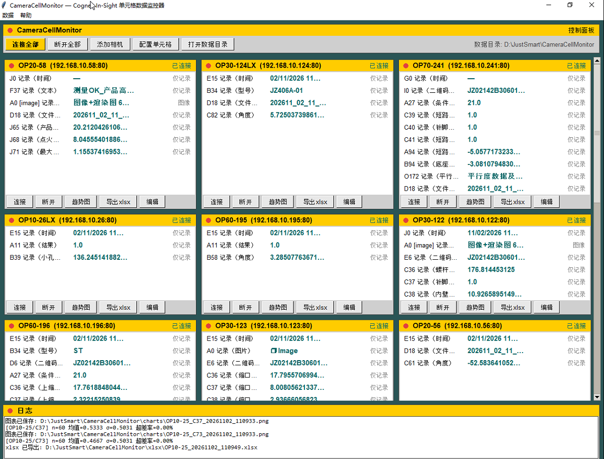
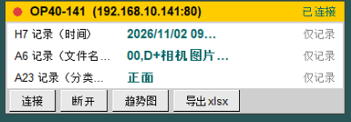
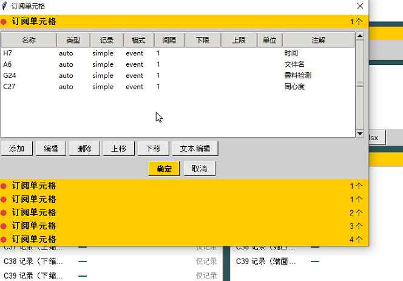

CameraTinyMES — 迷你 MES 系统
基于 Python 的迷你 MES（制造执行系统）：只依赖 sqlite3 等轻量库，即可在产线现场实现 MES 的核心功能——数据采集、生产追溯、质量判定与统计报表。
本工程从 CameraCellMonitor（Cognex In-Sight 单元格数据监控器）派生而来，复用其相机数据采集底座，在其上扩展 MES 功能。
界面与交互参考显示软件=20260321（CameraHelper，WinForms 多相机宫格显示软件）。
项目定位
| 传统 MES | CameraTinyMES |
|---|---|
| 重型架构（Oracle/SQL Server + B/S + 多服务） | 单机轻量（标准库 sqlite3 单文件数据库） |
| 部署复杂、需要服务器 | Python 脚本 / 单 exe 即开即用 |
| 通用行业方案 | 围绕视觉检测产线（智能相机 + GigE 工业相机）定制 |
适合小型产线 / 试产线 / 实验线：没有 IT 部门支持时，一台电脑 + 几台相机即可跑起来。
界面截图
| 界面截图 | 说明 |
|---|---|
 | 多相机宫格主界面：单元格实时值、连接状态与运行日志 |
 | 单相机面板：单元格结果与连接 / 趋势图 / 导出操作 |
 | 单元格订阅管理：类型、记录模式、采样间隔与上下限 |
功能
数据采集（源自 CameraCellMonitor）
- 两类相机接入：
- 智能相机：Cognex In-Sight（CogSocket
ws://<相机IP>:<端口>/ws，固件 22.2+ 默认端口 80，6.x+ 为 8087），相机在机端完成检测，软件采集其单元格结果 - GigE 工业相机：支持 GigE Vision / GenICam 标准的工业面阵相机，软件取像后结合检测算法 / 判定逻辑产出结果
- 智能相机：Cognex In-Sight（CogSocket
- 多相机并发：可同时连接 / 混用多台智能相机与 GigE 工业相机，单相机掉线自动重连，不影响其他相机
- 多单元格订阅：支持按结果事件（
resultChanged）触发或定时轮询（poll_interval） - 单元格数据类型：
auto / int / float / string / bool / other - 阈值判定：advanced 记录模式 + 数值类型时按上下限判定 OK/NG；simple 模式仅记录数据、不判定
MES 功能（本项目新增）
- 报表导出：xlsx 报表按 相机/日期/单元格 生成工作表，文件名自动追加时间戳防覆盖
- 可视化：折线 / 散点 / 趋势图（虚线基线 = 参考值/阈值，红色段 = 超差）并附 均值 / 标准差 / CPK / 超差率，中文字体内嵌
assets/ - 人工复核（误判标注）：对生产数据中的误判图片进行人工复核——绘制方框 ROI 圈出误判之处，并填写误判原因 / 注意点说明；标注结果按 XAnyLabeling 3.3.x 格式存储，可直接用于其他视觉算法训练学习误判区分
- 当日改善分析报告（已实现，详见 同名章节）：选日期 + 勾小时 → 统计各工站 NG/OK 与不良率 → 取证据图 → 生成 xlsx（WPS
DISPIMG嵌入单元格）+ PDF（A3 横版单页米黄底），先入库再落盘；配套局域网 Web 工作台（快速 tag、草稿、标注、工单闭环、后台任务中心）
产品追溯、生产记录、质量看板、NG 明细导出等 MES 扩展功能尚未实现，与报告侧待验证项一并列在 路线图。
技术要点
| 项 | 方案 |
|---|---|
| 语言/环境 | Python 3.13，尽量只用轻量依赖 |
| 包管理 | uv（pyproject.toml + uv.lock） |
| 智能相机通信 | CogSocket WebSocket（JSON-RPC + 事件订阅） |
| GigE 工业相机 | GigE Vision / GenICam 取像（帧回调触发采样与判定） |
| 数据存储 | 优先连接 MariaDB（工控机可经 reference/mariadb_installer.py 安装）；连接不可用时自动回退到标准库 sqlite3 单文件数据库（WAL 模式），保证最小可用性 |
| 报表 | openpyxl（xlsx） |
| 改善报告（xlsx） | openpyxl 生成版面 + WPS DISPIMG 公式把图片嵌入单元格（自行注入 xl/cellimages.xml），失败自动降级浮动图片 |
| 改善报告（PDF） | reportlab：A3 横版单页、米黄纸底 #FBF3DC、中文字体内嵌 |
| Web 工作台 | 标准库 ThreadingHTTPServer + 原生 HTML/CSS/JS 单页（无框架、无 CDN），默认 0.0.0.0:18110，端口占用自动顺延 |
| 后台任务 | tasks.py：单线程队列、进度回调、取消、dedupe_key 去重、部分完成（partial）状态 |
| 图表 | matplotlib（中文字体从 assets/*.ttf 加载） |
| 界面 | tkinter（多相机宫格布局，参照 CameraHelper） |
| 打包 | PyInstaller 单文件 exe，logo 使用 assets/app_icon.ico |
数据模型（SQLite / MariaDB 同构）
| 表 | 说明 | 关键字段 |
|---|---|---|
samples | 采样值 | ts、camera、cell、job（jobx 配方名）、value、text、ok、lower_limit / upper_limit / spec_version（判定快照） |
images | 单帧图像 BLOB（旧数据与编码回退） | ts、camera、cell、job（jobx 配方名）、kind（image / render）、mime、width、height、data |
image_streams | AV1 帧序列分片（IVF 码流） | ts_start / ts_end、camera、cell、job（jobx 配方名）、kind、codec、container、frame_count、size_bytes、data |
image_frames | 分片帧索引 | stream_id、frame_index、ts、camera、cell、kind |
events | 轻量异常事件（断线 / NG 突发） | camera、cell、code、首次 / 末次发生、恢复时间、状态 |
annotations | 误判人工复核标注 | image_id、label、description、json（XAnyLabeling 3.3.x） |
schema_meta | schema 版本号（规则同软件版本 YY.MM.DD.N） | key、value、updated_at |
reports | 改善报告存档头 | day、hours、filename、xlsx_size / pdf_size、xlsx_sha256 / pdf_sha256、stations / products / ng、payload_json、saved_xlsx_path / saved_pdf_path |
report_files | 报告文件二进制分块 | report_id、kind（xlsx / pdf）、part_no（1 MB 分块）、data |
report_tags | 快速 tag（人工复核口径） | day、camera、cell、ts、tag（misjudge / product / external）、reviewer、note |
report_drafts | 报告工作台草稿（乐观锁） | day、hours、payload_json、updated_at、updated_by |
tickets | 改善工单（类 GitHub Issue） | title、body、measure、status、priority、category、station、camera、assignee、due_date、closed_at |
ticket_reports | 工单 ↔ 报告双向关联 | ticket_id、report_id、station、created_at |
ticket_events | 工单时间线 | ticket_id、ts、actor、kind（created/comment/status/assign/link_report/measure）、payload |
六张采集表 + 八张业务表（报告存档 4 张、schema 版本 1 张、工单 3 张）。相机与单元格配置存于 config/cameras.json，报告生成选项存于 config/report.json，均不入库。
job 为拍照时相机运行的作业名（GET cam0/hmi/job/name，如 myjob.jobx），连上相机即读取、之后每 10 秒刷新；换配方时自动封掉旧的 AV1 分片，一个分片只属于一种配方。按 job 分组即可统计各配方的 NG 率 / 误判率。
具体表结构以 src/cameratinymes/storage.py 实际代码为准。
数据库连接（MariaDB 优先，SQLite 兜底）
工控机可能已通过 reference/mariadb_installer.py 安装 MariaDB（一键离线安装器，内嵌 MariaDB 13.0.2 MSI 静默安装）。安装器的固定参数即本软件的默认连接参数：
| 安装器参数 | 值 |
|---|---|
| 安装 / 数据目录 | D:\JustSmart\MariaDB（无 D 盘回退 %APPDATA%\MariaDB） |
| 端口 | 8306（非默认 3306） |
| 服务名 | MariaDB（注册为 Windows 服务） |
| 管理员账号 | justsmart / justsmart（'%' + 'localhost'，全部权限） |
| 网络 | bind-address=0.0.0.0，允许产线其他设备远程连接 |
软件启动时按以下顺序选择存储后端：
- 探测 MariaDB：按配置的主机 / 端口 / 账号尝试连接（默认
127.0.0.1:8306，账号justsmart） - 可用：所有采样记录、图像与标注数据写入 MariaDB，支持多客户端并发访问与集中汇总
- 不可用：自动回退到
sqlite3单文件数据库并记录日志，保证单机最小可用性，不因数据库缺失影响产线采集
两套后端共用同一套表结构与数据访问接口，对上层功能透明；运行中 MariaDB 断连时驱动自动重连并重试当前写入，不做本地缓存补写。
| 配置项 | 说明 | 默认值 |
|---|---|---|
db_backend | auto（MariaDB 优先，回退 SQLite）/ mariadb / sqlite | auto |
mariadb.host / port | MariaDB 地址与端口 | 127.0.0.1 / 8306 |
mariadb.user / password | 账号与密码 | justsmart / justsmart |
mariadb.database | 数据库名（不存在则自动建库） | camera_tiny_mes |
sqlite.path | 回退时 SQLite 文件路径 | 数据目录下 db/mes.db |
采样机制
| 模式 | 触发方式 | 说明 |
|---|---|---|
event | 相机 resultChanged 事件 | 订阅结果事件，处理完毕调用 ready() 应答（背压控制） |
poll | 软件定时轮询 | 每隔 poll_interval 秒调用 queryCellResults 拉取单元格当前值 |
GigE 工业相机由软件端取像：相机帧回调 → 触发采样与判定逻辑 → 结果落库（OK/NG 判定在软件内完成，阈值配置与智能相机共用一套）。
AV1 帧序列压缩（A0 连续图像）
产线上同工位的 A0 图像连续且变化很小，逐张 JPEG 存储占用大。软件把同一「相机 + 单元格 + 类型」的连续帧按 GOP 打成 AV1（IVF）分片后入库，原始图与 A0 渲染图都适用。
| 参数 / 行为 | 值 |
|---|---|
| 分片上限 | 30 帧（同时是 GOP 长度，片内首帧为关键帧） |
| 空闲封片 | 5 秒无新帧即封片 |
| 换配方封片 | 相机作业（jobx）变化时立即封片，分片带 job 便于按配方统计 |
| 编码器 | SVT-AV1 preset 10 + CRF 32，yuv420p |
| 实测（OP20-58 真实 30 帧） | 1.39 MB JPEG → 213 KB AV1（6.5×），编码 0.53 s，解码 0.17 s |
- 单帧回取：定位
image_frames后解码所属分片，最多解码 30 帧，随机访问可控 - 旧版逐张
images数据保持原样，查询与 xlsx 导出时自动合并两种来源 - 删除按整片进行：时间范围与分片重叠即整片删除（片内帧互相依赖）
- 无 ffmpeg 或编码 / 入库失败时自动回退逐张 JPEG 写入
images，不丢数据 - 崩溃 / 断电最多丢失最后一个未封片（≤30 帧或 ≤5 秒）；断开相机与关闭程序都会强制封片
- 依赖外部
ffmpeg（需含libsvtav1）；启动时按 环境变量CAMERATINYMES_FFMPEG→PATH→ 离线安装器默认目录（%LOCALAPPDATA%\ffmpeg/%ProgramFiles%\ffmpeg）→ 注册表PATH的顺序自动定位，装好即可用，无需手工配置
误判标注（人工复核）
复核流程：从生产记录中筛选误判图片 → 人工在图像上绘制方框 ROI 标记误判位置 → 填写误判原因 / 注意点 → 保存标注文件，供其他视觉算法训练学习误判区分。
标注文件采用 XAnyLabeling 3.3.x JSON 格式，每张图片对应一个同名 .json 文件：
- 图片数据内嵌
imageData（Base64 编码），不依赖imagePath——标注文件自包含，脱离原始图片目录仍可被训练管线直接读取 - 方框 ROI 使用
shape_type: "rectangle"，points为左上角 / 右下角两点的像素坐标 label为误判类别；description记录误判原因或注意点
{
"version": "3.3.6",
"flags": {},
"shapes": [
{
"label": "misjudge_scratch",
"score": null,
"points": [[512.0, 340.0], [768.0, 512.0]],
"group_id": null,
"description": "误判原因：反光被误判为划痕；注意避免侧光角度",
"difficult": false,
"shape_type": "rectangle",
"flags": {},
"attributes": {},
"kie_linking": []
}
],
"imagePath": "CAM01_20261108_101530.jpg",
"imageData": "<Base64 编码的图片数据>",
"imageHeight": 1944,
"imageWidth": 2592
}imagePath仅保留文件名作展示用途，训练读取以imageData为准。
当日改善分析报告
面向客户的「视觉改善分析报告」：按日期 + 小时统计不良，自动取证据图，输出 xlsx（WPS 单元格内嵌图）与 A3 PDF，并把原因与改善措施挂到工单上闭环。
入口与载体
- 桌面端：工具栏「改善报告」、数据菜单「生成改善报告…」、托盘菜单「改善报告工作台」
- 入口对话框：选日期（只列有产线记录的日期）+ 勾小时（快捷：全选 / 0点-当前小时 / 清空 / 仅NG时段），并显示本机与局域网访问地址
- 载体：内嵌 Web 工作台（单页，无框架），默认
http://<本机IP>:18110/report；地址 / 端口 / 口令在「系统 → 设置 → 改善报告工作台」 - 端口顺延：默认端口被占用时自动 +1（最多 20 次），实际端口写回
settings.json并在reports/.web_port留痕 - 安全边界：监听默认
0.0.0.0（其他工控机可连）；打开桌面入口、打开 / 删除存档等敏感操作只允许回环地址；可设访问口令（cookiectm_token/?k=/X-CTM-Token），请求体上限 1 MB
统计口径
HNG 总数（NG 事件数）、I视觉NG =H - J、J其他NG = 人工 tag 之和（M误判 +X产品自身NG + 外部原因…）- tag 可人工覆盖；tag 之和超过
H时截断到H，不出现负数 - 工站识别：相机配置
station优先，缺失按相机名前缀OPxx推断；station_name与model分别填报告 C、B 列 - 时段默认：当日 0 点→当前小时，历史日期全天
取图规则
- NG 证据帧：NG 事件时间与 A0 帧时间最近且相差 ≤ 5 秒；渲染图（
kind=render）优先，缺失回退原图并在工作台标「原图」角标 - OK 参考图：时段内 OK 记录时间中位数附近取一帧，匹配窗口 5 秒 → 60 秒 → 300 秒逐级放宽
- 每工站最多 12 张 NG 图（报告 M..X 列），单图长边压到 800 px 以内
输出规范
| 产物 | 说明 |
|---|---|
| 工作表 | 主表名 = 统计日期（如 11月10日），另附「数据核对」表（逐相机 OK/NG 与 tag 分布） |
| 列 | A 序号、B No.、C 工站&机台、D 相机型号&站名、E 实物图片、F OK相机图片、G 生产总数、H NG总数、I 视觉NG、J 其他NG、K、L 原因分析及改造解决方案、M..X NG 图 |
| 隐藏列 | E（实物图片）与 F（OK 相机图片）默认隐藏，按需用工作台「显示实物图片」开关打开 |
| DISPIMG | 图片以 =_xlfn.DISPIMG("ID_xxx",1) 公式嵌入单元格，并注入 xl/cellimages.xml + 关系文件 + Content_Types 清理；嵌入失败自动降级为浮动图片并记录警告 |
A3 横版单页（1190.55 × 841.89 pt）、米黄纸底 #FBF3DC、中文字体内嵌，跳过隐藏列、一页自适应 | |
| 文件名 | 视觉改善分析报告_{yyyyMMddHHmmss}.xlsx / .pdf，写入数据目录的 reports/ |
存档与落盘
- 先入库再落盘：
reports存档头 +report_files每 1 MB 分块（含 sha256）→ 再按 1 MB 分块原子写盘 - 入库成功但落盘失败或被取消时，任务标记为部分完成，存档仍可在工作台下载
- 存档视图：列出历史报告（日期、小时、工站数、产品数、NG、文件大小），支持下载 / 重新导出 / 删除；显示存储占用统计
- 保留策略：
report_keep_days（默认 90 天）、report_keep_count（默认 200 条），启动时清理*.tmp残留
工单闭环
- 右栏可按工站勾选或新建工单；分类
misjudge/product/external/other，责任人默认「视觉相关人员」 - 未闭环工单的「改善措施」自动追加到报告「原因分析及改造解决方案」正文
- 工单详情含状态机（
open→in_progress→done→closed）与时间线（创建 / 评论 / 状态 / 指派 / 关联报告 / 改善措施） - 编辑采用乐观锁（
base_updated_at），冲突返回 409 并提示覆盖
后台任务
- 生成与导出统一提交到
TaskManager，页面右下角任务面板轮询进度，可取消 - 同一「日期 + 小时」重复提交自动去重（
dedupe_key）；程序重启时未完成任务标记为「已中断」
相关配置
config/settings.json：
| 配置项 | 说明 | 默认值 |
|---|---|---|
web_host | 监听地址（0.0.0.0 = 局域网可访问，127.0.0.1 = 仅本机） | 0.0.0.0 |
web_port | 监听端口（被占用时自动顺延并写回） | 18110 |
web_token | 访问口令，空 = 关闭 | 空 |
project_name / destination / line_name | 报告标题与抬头信息 | 空 |
config/report.json：
| 配置项 | 说明 | 默认值 |
|---|---|---|
image_embed | dispimg（WPS 嵌入单元格）/ floating（浮动图片） | dispimg |
pdf_engine | reportlab / com | reportlab |
ng_images_per_station | 每工站 NG 图上限（1~8） | 6 |
image_max_edge | 嵌入图片长边上限（px，200~2000） | 800 |
reviewer | 默认编制人 / 审核人 | 空 |
op_aggregate | 数量聚合方式 median / max / first | median |
report_keep_days / report_keep_count | 存档保留天数 / 条数（0 = 不限） | 90 / 200 |
开发 / 运行
uv sync # 安装依赖
uv run mes # 启动应用
uv run mes --simulate # 启动内置模拟相机离线体验完整流程
uv run python build_exe.py # PyInstaller 打包 dist/exe_{yyyyMMddHHmmss}.exe应用启动时会自动拉起改善报告 Web 工作台：本机访问 http://127.0.0.1:18110/report，其他工控机访问 http://<本机IP>:18110/report。端口被占用时实际端口写入 settings.json 的 web_port，也可在「系统 → 设置 → 改善报告工作台」修改监听地址 / 端口 / 口令。
路线图（未完成规划）
报告功能现场验证
- 用真实一天数据与客户模板逐格对比（列宽、行高、合并、图片位置、字体）
- WPS（
DISPIMG单元格内嵌）、Excel（自动降级浮动图片）、PDF 三种打开方式的现场确认 - 单页容量评估：NG 图超过 12 张 / 工站较多时的多页排版方案
MES 功能
- 产品追溯：以工件 / 批次号串联检测记录（依赖扫码数据，跨相机产品关联后置）
- 生产记录：班次 / 工单 / 产品型号维度的产量与直通率统计
- 质量看板：跨日期 / 产品 / 相机的良率、超差率、CPK 汇总
- NG 明细导出：NG 明细查询与 xlsx + CSV 导出
采集与事件
events表接入采集端写入（相机断线、NG 突发），并在工作台提示- 规格版本管理：把
ParameterSpecs.Version一类规格版本落到判定与报告快照
明确不做（与非目标保持一致）
自动缺陷分类 / 自动归因、PPT 输出、客户 MES 序列号对齐、报告多用户权限、工单通知（邮件 / IM）、工时与成本核算、附件上传、甘特图、与客户系统同步。